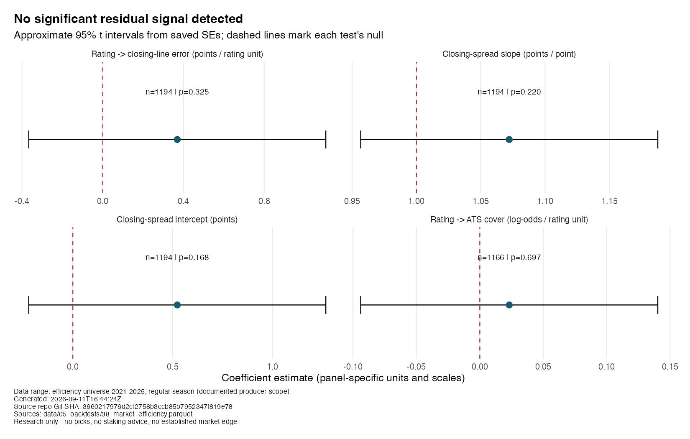
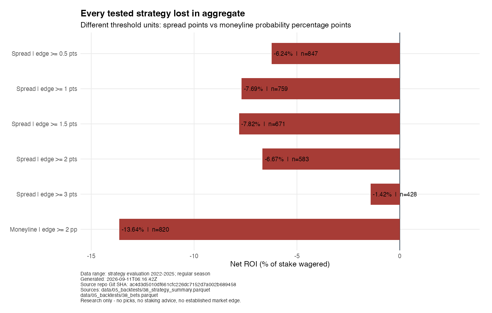

I Built an NFL Power Index. The Closing Line Still Beat It.
Six strategies, six losses — and nothing the closing line had missed.
The real closing-line backtest detects no significant residual signal from my power index. All six tested strategies lost in aggregate net of vig over the saved strategy-evaluation seasons. These results do not support staking money.
A football story is not a market advantage
The index starts with a reasonable football question: can a team’s efficiency, physicality, and situational tendencies help explain its strength? EPA—expected points added—summarises the change in scoring expectation produced by a play. The composite combines offensive and defensive EPA with schematic proxies such as stuffed runs, long third downs, personnel usage, and four-man pressure.
Those ingredients can make a useful descriptive ranking. To establish an edge, however, the ranking must say something the closing line does not already price. The title refers to that economic comparison: it is not a claim that this article directly compares the power index and the market on Brier score.
The index uses hand-set weights and constructed tier labels, not observed or validated Bootleg Football ratings. The saved descriptive rankings include the current game. The backtest producer instead rebuilds lagged ratings and fits rating-to-margin and rating-to-win-probability mappings using earlier seasons only. This publication reads the resulting backtest artifacts; it does not rebuild either ratings or models.
Put the market’s error on the scoreboard
The first test asks whether the home-minus-away rating differential explains actual home margin minus the closing spread. If the index contains information missing from the close, its coefficient might differ from zero. The saved estimate does not clear that test.
Two further coefficients examine closing-spread calibration: the intercept’s null is zero, while the slope’s null is one. A fourth test relates the rating differential to covering the spread. Testing every coefficient against zero would answer the wrong question for the calibration slope.

| Test | n | Estimate | Null | Approx. 95% interval | p vs null |
|---|---|---|---|---|---|
| Rating -> closing-line error (points / rating unit) | 1194 | 0.36937 | 0 | [-0.36664, 1.10538] | 0.32501 |
| Closing-spread slope (points / point) | 1194 | 1.07214 | 1 | [0.95670, 1.18758] | 0.22047 |
| Closing-spread intercept (points) | 1194 | 0.52314 | 0 | [-0.22079, 1.26707] | 0.16795 |
| Rating -> ATS cover (log-odds / rating unit) | 1166 | 0.02321 | 0 | [-0.09386, 0.14028] | 0.69738 |
The regression universe covers regular seasons 2021–2025, including the initial season that is training-only for strategy evaluation. The ATS test drops pushes, so it has fewer observations. These are retrospective efficiency tests, not an additional held-out forecasting contest.
The plot reconstructs approximate 95% intervals from the saved, rounded standard errors using the producer’s t reference with n - 2 degrees of freedom, including its logistic row. These are ordinary model standard errors, not team- or season-clustered errors. The panel scales and coefficient units differ.
Failing to reject the null is not proof that the market is universally efficient. It means these tests did not detect the proposed signal in this sample. It does not rule out smaller effects, other features, other markets, or future changes.
After the bookmaker’s margin, every aggregate strategy loses
The economic test evaluates five absolute spread-edge thresholds and one fractional-Kelly moneyline rule. Strategy outcomes cover 2022–2025; 2021 supplies initial training history and is never bet.

| Strategy | Bets | Net ROI |
|---|---|---|
| Spread | edge >= 0.5 pts | 847 | -6.24% |
| Spread | edge >= 1 pts | 759 | -7.69% |
| Spread | edge >= 1.5 pts | 671 | -7.82% |
| Spread | edge >= 2 pts | 583 | -6.67% |
| Spread | edge >= 3 pts | 428 | -1.42% |
| Moneyline | edge >= 2 pp | 820 | -13.64% |
Spread rules use a one-unit stake at an assumed fixed −110 price. The closing spread is real; that fixed spread price is an assumption, not a historical book-by-book price series. The implementation excludes pushes from both the bet ledger and ROI denominator. ROI is profit divided by recorded stake, not a compounded bankroll return.
The moneyline rule uses saved offered closing odds, proportional no-vig probabilities for the edge comparison, quarter-Kelly sizing, and a 5% per-bet stake cap. Its threshold is a probability difference, not spread points; the chart labels those units separately. Its reported ROI is also profit divided by stake, not a simulated season’s bankroll percentage change.
The less-negative threshold is not a discovered winner. Threshold samples overlap and were compared on the same historical period. Some individual strategy-seasons were profitable; the claim is about each strategy’s aggregate result. The chart shows observed returns, not confidence intervals or forecasts of future losses. No live execution, liquidity, or line-shopping advantage is demonstrated.
A promising feature block is still an unresolved result
A separate calibrated XGBoost experiment asks whether schematic features add predictive value beyond baseline EPA. Negative Brier deltas favour the full model. Both saved point estimates are negative, but both paired-bootstrap intervals cross zero:
| Split | Games | Brier delta: full minus baseline | Paired-bootstrap 95% CI |
|---|---|---|---|
| A test-2024/25 | 447 | -0.00707 | [-0.01462, +0.00010] |
| B test-2025 | 223 | -0.00305 | [-0.01450, +0.00920] |
These are game-paired percentile intervals from 2,000 bootstrap resamples. Split A tests 2024–2025; split B tests 2025, so the test windows overlap—they are not independent replications. The schematic block is directionally better, not established at 95%. Feature importance is not causal evidence, and it is not a substitute for an out-of-sample improvement.
The result worth publishing
The portfolio achievement is a research question answered without turning an interesting football feature into an unsupported market claim. The next credible step would require new, genuinely held-out evidence and a pre-specified test, not selecting whichever historical threshold looks least bad.
Historical opening-line and CLV findings are excluded entirely: their old openers were synthetic. R/11_scrape_opening_lines.R now refuses to run. Invalid input cannot be rehabilitated with an attractive result or a small-sample caveat.
Artifact fingerprints
Generated: 2026-09-11T06:16:42Z
Source repo Git SHA: ac4d3d5010df661cfc226dc7152d7a002b689458
Data range: NFL regular seasons 2021-2025 (efficiency universe / model development); strategy evaluation 2022-2025; saved model tests 2024-2025.
Research only - no picks, no staking advice, no established market edge.
| Source artifact path | Rows | SHA256 |
|---|---|---|
| data/04_models/36_model_metrics.parquet | 8 | d83f928f256b6e4685431a4f61720f7eae9d20c44f5a4e67cc0874be7364898f |
| data/04_models/36_predictions.parquet | 1340 | 1a703913e33ef86c3f1dcc3127c413aa008b716aca0e7680aac052ba9ec6d1c6 |
| data/04_models/36_feature_importance.parquet | 20 | 129a59f1e77da7135eab2d75c817690e30de7835fed3cc9e3996062c2d42ec91 |
| data/04_models/36_calibration.parquet | 21 | 4ecea4374cec372a1dcbeea0170e0ecea299884b9de1f1361369c95bf76e3b59 |
| data/04_models/36_incremental_value.parquet | 2 | 043988f307faee722987bba0546899fa34b4dcaeea18a0e28162cc40838f1c48 |
| data/05_backtests/38_market_efficiency.parquet | 10 | 134bb6585d6ccf94eb2582a3b656ed0d0ee0b51c5ca64cae7247ec136caad83c |
| data/05_backtests/38_strategy_summary.parquet | 6 | ebc9407bb641e9e641eb5a64d84ffdd0e412066ff2dac2958e3902c21ed77995 |
| data/05_backtests/38_strategy_by_season.parquet | 24 | cf0bfaa03c56db640d48b6b8c5b9ee13ec70ce4d809b6966ec771148050a284e |
| data/05_backtests/38_bets.parquet | 4108 | 7dce083ec8d69fe3e91f3a93e7d55a31b3fb70e1b20fe48fefa6412b467f46df |
Publication-source fingerprints
These identify the current publication sources, including uncommitted edits.
| Path | SHA256 |
|---|---|
| _includes/provenance.html | 3e258b4767fcce774770f800b3e33e2101c6198e7ea9574635d9c91a1b25b473 |
| posts/market-efficiency/index.qmd | 7d6a169e60e394ccef0e3e8780654912dd2cabc1933fe019c4272fcf004ace11 |
| scripts/generate_market_efficiency.R | 7868b5e28e0161d7081fafbad9a5fa8b3505170738f4d329ec6671952cae8a9c |